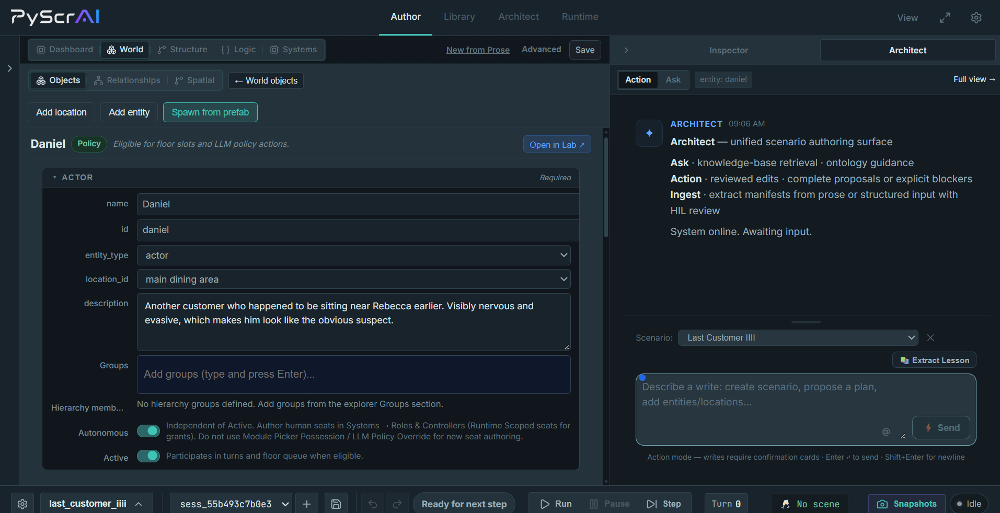

Consequential simulation
Model the world.
Explore consequences.
Understand outcomes.
PyScrAi is a simulation platform for designing and executing complex, decision-driven environments. Human, AI, and deterministic actors operate within a shared, governed world where decisions produce persistent consequences and outcomes remain traceable to their causes. From social dynamics to strategic operations, PyScrAi provides the infrastructure to explore uncertainty, evaluate decisions, and understand how complex situations unfold.
Explore adjudication-
01AuthorLibraryReusable contentScenarioEntities · roles · rules
-
02InstantiateSessionIsolated world · execution strategy
-
03DecideHumanSeatDeterministicRulesAIModel policy
-
04ResolveUnified executionRuntime engineOperations · adjudication · authority
-
05RecordCommitWorld statePersistent consequencesObserveCausal evidenceDecisions · replay · inspection
Execution & adjudication
Configure how the world unfolds.
Independent controls for decision timing, action freedom and consequence authority. One governed runtime.
Execution strategy
When decisions are collected.
Action expressiveness
What participants may attempt.
Consequence source
How effects are determined.
Commit authority
How generated effects are approved.
Platform in practice
Inside the workstation.
Real screenshots captured from the running PyScrAi application. Explore the Svelte 5 workstation as it exists today—not mockups or concept renders.


Entity authoring
Configure entities directly alongside the Architect’s reviewed authoring assistance.
One runtime. Many worlds.
- Tactical
- Strategic
- Social
- Industrial
- Interactive gameplay
- Agent experiments